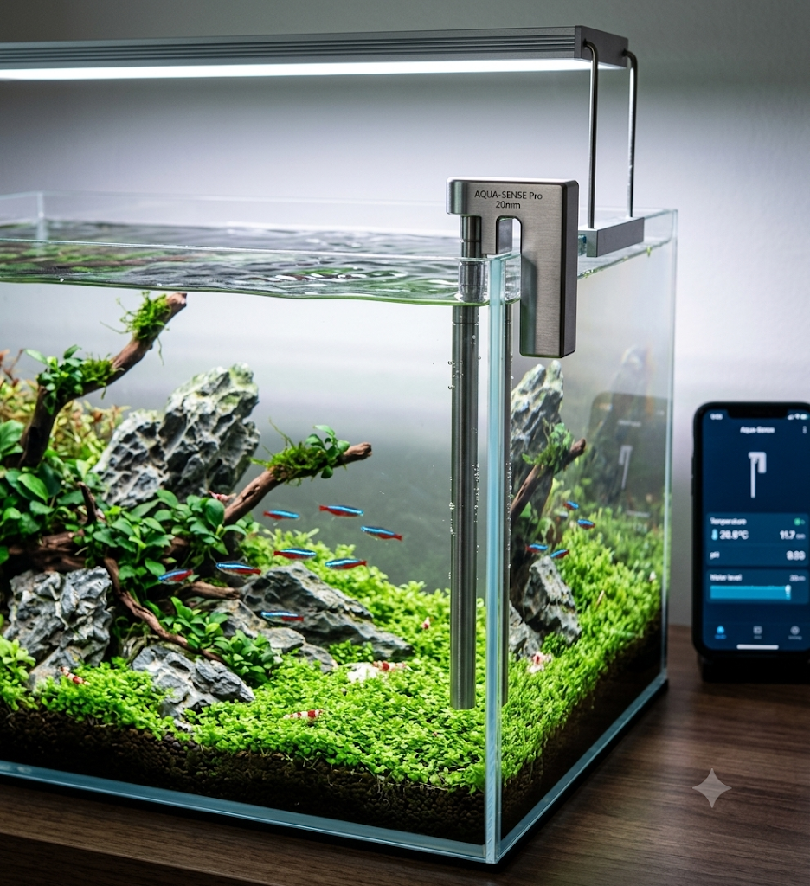
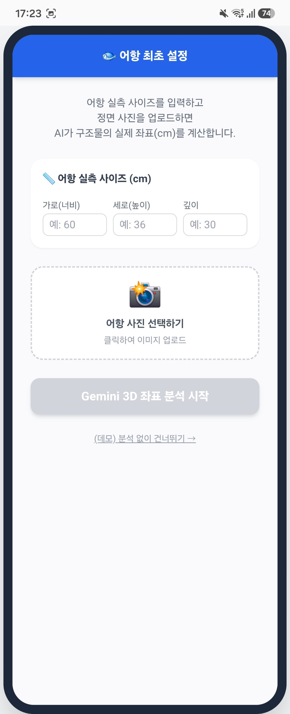
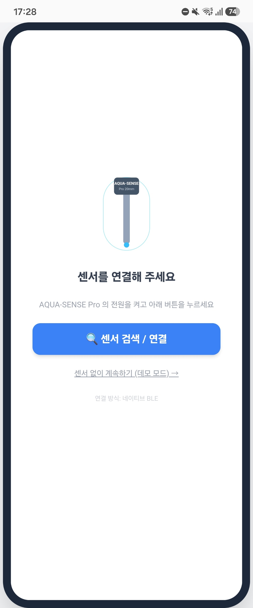
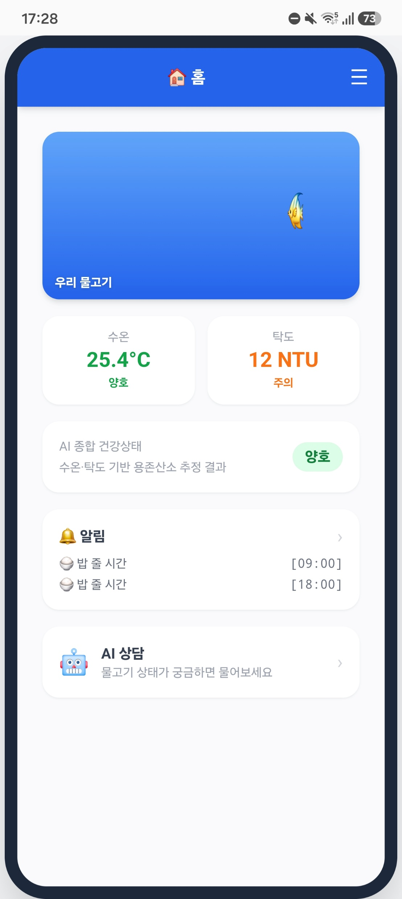
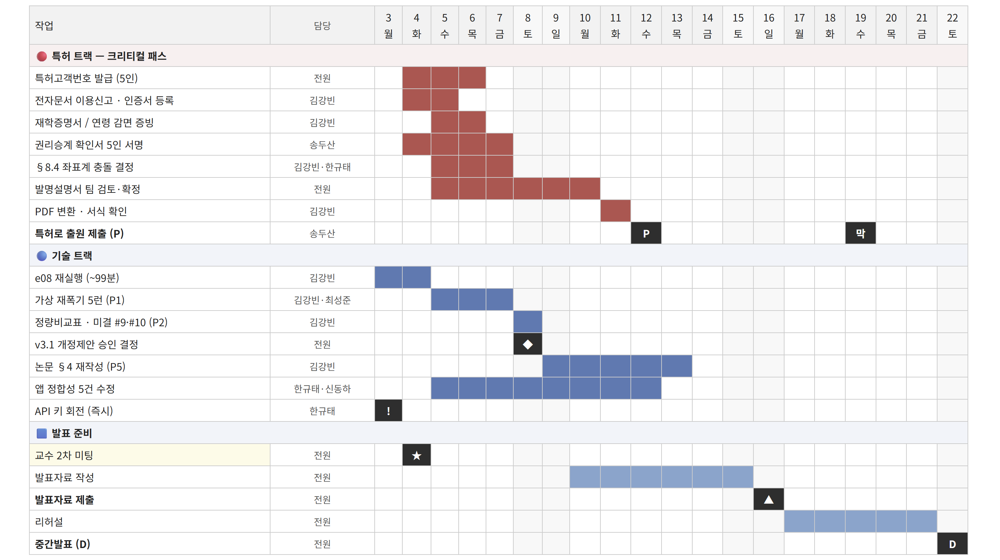

漁 벤 져 스
2차 모임 현황 보고
가정용 어항 용존산소(DO) 공간분포 진단 디바이스
기계 김강빈 · 기계 최성준 · SW 한규태 · SW 신동하 · 경영 송두산
1-1 · 1-2. 주제를 바꾼 물리적 이유기존 주제 — 산업 양식장(가두리) 내부 유속 프로파일 기반 DO 3D 분포 예측
주제변경의 사유 ①
유속항이 지배적 이라고 보았다
∂C/∂t + ∇·(U C) = ∇·(Deff ∇C) + ΣS
가두리 양식장 내부 유속 프로파일 확보 가 목표
유속장을 알면 DO 3D 분포를 알 수 있다고 판단
주제변경의 사유 ②
외부 유동이 안쪽에 닿지 않는다
4×8 배치 · 10×10×10 m 케이지, 외부 균일유동 0.3 m/s
외부와 직접 맞닿은 케이지만 영향을 받음
안쪽 2×6 케이지는 유속이 거의 0에 수렴
남는 것은 방향 없는 난류성 유동 뿐
→ 고전 방정식 해석 실패 · 검사체적 해석 실패
방정식으로 되돌아가서 얻은 것
U ≈ 0 , ∂C/∂t = 0 ⟹ 0 = ∇·(Deff ∇C) + ΣS
정상상태 케이지 내부 DO는 ΣS 하나 로 결정된다 — 문제가 간단해졌다
…그리고 잃은 것
이송항이 사라지면 공간구조도 사라진다
공간구조가 없으면 "어디가 위험한가" 를 물을 수 없다
AI융합 대회에서 다룰 대상이 남지 않는다
1-3. 전환 확정 — 가정용 어항 DO 공간분포 진단2026-07-11 · 산업 양식(가두리) 트랙 종료
항목 가두리 (구 주제) 가정용 어항 (현 주제)
유동 U ≈ 0 → ΣS로 정상상태 DO 결정 폭기 와류로 유동이 정상상태에 미수렴 해석 정상상태 과도상태 URANS · SST k-ω 후 시간평균이송항 소거 유지 — 저산소역(공간구배)이 핵심 차별점Péclet 수 — 플룸 O(10–100) ~ 정체역 O(0.1) 공간변동 = 공간구조의 원인
포지션
자율주행이 아니라 계기판 경고등
위험 / 안전 / 건강 판정만 한다
2단계 설계
① 실험 — 재폭기 시험 + CFD ground-truth
② 저가제품 — 센서 + 카메라 + 물리로 DO 장 재현
신규성 = 교집합
방법(CFD·KL a 캘리브레이션)은 교과서 표준
가정 어항 × 사진기반 자동 BC × 소비자 공간 DO 진단 의 통합
2-1. 프로젝트 워크플로우 — 가정을 실측으로 때리는 루프
EX1 크기 스윕
유의미 범위
L = 0.35–0.8 m
EX2 재폭기 시험
S1~S5 · 실측 확정
K_La = 2.479 /h
EX3 A층 ROM
CFD 253케이스
+ 기하인식(VLM)
_exceptions 게이트 (EX_exception 1~5)
가정·상수가 실측과 어긋나면 본 실험을 멈추고 별도 예외검증으로 판정한 뒤에만 복귀한다
03_논문
frozen · 단일 진실원
CFD_method — 방정식·BC
상수_목록 — 계수 값
References — 서지 [R#]
실험 문서는 참조 + 델타만
적는다 (문서 역할 3원칙)
특허 — 발명설명서(임시명세서)
독립항 A·B·C 3개 · 전자출원 (P, 8/12)
논문 — Preprints.org → MDPI Sensors
DOI 확보(X, ~9/15) 후 확장판 투고
제품 · 앱 — 최종 산출물
프로브 v3.1 freeze + APK 4.9 MB
→ 4절에서 시연
2-2. 역할 배분인터페이스는 말이 아니라 문서 로 넘긴다 — 예: 폭기전력 → KL a 환산 사양서 (기계 → SW, 8/3 인계 완료)
트랙 담당
주요 산출물 현재 상태
물리 · 논문 기계 김강빈 · 최성준
EX1 · EX2(재폭기 S1~S5) · EX3 · CFD_v2 · 논문 정본 · 상수 진실원
본시험 5런 완주 CFD_v2 e08 재실행 잔여
제품 · 하드웨어 기계 김강빈 · 최성준
탁도 프로브 설계 v3.1 · 외피 · STL 5종 · Fusion 회로도 · 펌웨어
v3.1 freeze 추가 구매 0원
SW · 앱 SW 한규태 · 신동하
기하인식(VLM/Gemini) · ROM rev.C · step01~03 앱 · Capacitor 패키징
APK 4.9 MB 산출 정합성 5건 수정 중
경영 · 특허 경영 송두산
시장·경쟁 분석 · BOM/원가 · 손익계산서 v13 · 특허 출원 실무
크리티컬 패스 출원 목표 8/12
3-1. 논문 — 방법론두 축을 하나의 계수로 잇는다
(a) 물리 — 시뮬레이션 ↔ 실제
URANS + 이송확산으로 이격을 계수화
κ = KL aeff,meas ⁄ KL aeff,CFD
유동이 정상상태에 미수렴 → 과도상태 계산 후 시간평균 , DO는 스칼라 수송(이송항 유지)
실측 = 비정상 재폭기 시험 (Na₂SO₃ 탈산소 후 회복곡선 피팅)
hold-out 축 = 에어스톤 침지 높이 zstart
(b) AI — 사진에서 경계조건으로
생성형 AI 기반 BC 자동설정
사진 1장 → Gemini 2.5 Flash → 기하·위상 JSON (정규화 [0,1] 좌표 + confidence)
좌표 변환 확정 — 사진좌표 ≠ CFD좌표 (2·3축 교환), coords_img·coords_cfd 둘 다 필수
인식 결과가 소스항 위치 Ωair · Ωfilter · Ωfish 로 들어간다
A층 (기하 → 시간평균 유동장) → B층 (유동장 고정 후 DO 선형 스칼라) 2계층 분할= 특허 독립항 B의 근거
소스 닫음 — 폭기를 방정식에 넣는 방법
αg = Ugs ⁄ (W + Uslip ) ·
a = 6αg ⁄ db ·
W = 0.2178 Su0.511
drift-flux 고정점 · 생물 소비항(Monod)과 저서 SOD는 모델에서 제거하고 어항별 BC로 분리(무저질 검증)
3-2 (a)(b). 실험 결과 — 레짐 한계와 공간구배
(a) 동일 물리 레짐의 한계를 결정했다
런 zstart KL a [/h] @25 ℃ κ
S1 0.020 2.502 0.952 ± 0.014 CV 1.44 % S2 0.020 2.437 S3 0.020 2.497 S4 0.080 2.079 1.063 (+11.7 %) S5 0.170 (hold-out) 1.070 1.057
0.08 → 0.17 레버는 −0.58 %로 일치 ⟹ "이상은 z = 0.02 한 점에 있다"
주장 교체: "κ가 전이된다" → "κ는 설계점 보정계수이고 CFD의 z 레버는 과대하다"
가설 (a) 기하 오차 기각 → 가설 (d) 폭기 위치 부상같은 Su에서 위치만 바꿔 W +8.2 % / αg −7.0 %, 효과가 z=0.02에 집중 → 예상 κ 격차 10.5 %p → 약 6 %p
(b) 공간구배는 없다 — 정량 확보 (주 결과: 음성)
A ≡ (C̄ − Cmin ) ⁄ (C* − C̄) = (χmax − χ̄) ⁄ χ̄
사육 부하 [마리] 3 10 28 80 공간 진폭 A 1.7 % 1.6 % 1.5 % 1.5 %
부하 R이 소거되므로 A는 기하·유동만의 양 — 부하 무관하게 상수인 것은 계산 결과가 아니라 정리(定理)
공간항이 등급을 뒤집을 경로가 구조적으로 없다 이 음성 결과가 곧 VLM–ROM의 오차 예산을 열어준다 → 다음 장
3-2 (c)(d). 실험 결과 — VLM · ROM 성능 확보허용오차 ±50 mm 안에서 두 모듈이 모두 성립한다 ·
δtot = √(δROM ² + δVLM ²) ≤ 70 mm
(c) VLM 성능 — 인수시험
대상 ‖Δr‖ 예산 소진 ΔLeq 판정
작은 바위 37.1 mm 74 % +2.0 mm PASS 큰 바위 33.1 mm 66 % +4.6 mm PASS
누락·오검출 0건 , 종류 분류 2/2
6축 절대평균 오차 1.40 cm — 사람 대조군 1.54 cm보다 좋다
판정 영향 환산 합계 0.0030 mg/L = 위험 여유(2.02 mg/L)의 0.15 %
오분류·누락 섭동도 안전측 (정상 7.84 → 오분류 8.03 → 누락 8.03, 모두 "양호")
한계 — 깊이축은 관측이 아니라 대입 이다 (d가 w와 매번 동일, z가 10.00 단위 스냅)표본 1장 · 수초 표본 0개 · 인수시험 3회 중 1회 완료
(d) ROM 성능 — 판정 과제 (253케이스 5-fold CV)
격자 구역 블록 RF top1 평균장 top1-Q
3×6 18 7.0×7.8 cm 0.952 0.956 1.000 4×9 36 5.2×5.2 cm 0.668 0.569 1.000 6×18 108 3.5×2.6 cm 0.470 0.355 0.992
제품 사양으로 번역
47×21 cm 수조를 5 cm 격자 36구역으로 볼 때 —67 % , 위험 상위 25 % 안일 확률 100 %
학습곡선은 N=60에서 포화 (0.486 → 0.692 → 0.684 → 0.668) ⟹ 추가 CFD 0건 으로 확보
장(field) 과제 하이브리드: cdist 5.9 mm · IoU_min 0.276 → δROM 은 예산의 0.7 %
구성별: 식물만 IoU 0.785(성립) / 혼합 0.568 / 바위만 0.423(비가법, 실패)
유효범위 구조물 0~2개 (Tier3 n=3~6 미학습) ← 남은 제약
4-0. 최종 산출물 — 시스템 구성DO 센서를 넣지 않는다. 수온·탁도 2종 + 사진 1장 으로 DO를 추론한다 — 특허 C1~C7이 그대로 제품 블록도다
INPUT
C1 · 수질 계측 센서부
수온(DS18B20) · 탁도(자체 IR)
계측치 = 진단 항목 + 물리모델 입력
C2 · 영상 인식부
수조 정면 사진 1장 → Gemini
치수 · 장식물 · 수초 · 폭기 위치 · 마릿수
C3 · BC 자동설정부
인식 결과 → 정규화 경계조건
사진좌표 → CFD좌표 변환
C4 · 물리 추론부
이송-확산 지배방정식
A층 ROM → B층 DO 스칼라
DO 공간분포 (4×9 위험맵)
추가 CFD 0건 · 앱 내부에서 즉시 연산
C5 · 어류 건강도 추정부
축적 데이터 기반 어종·사육조건별 임계
C6 · 융합 판정부
수온 · 탁도 · DO
동등한 3개 항목으로 융합
OUTPUT
위험 / 안전 판정
DO_CRIT 6.0 · 최저 지점 기준
배치 처방
폭기기 · 장식물 위치 권고
C7 · 캘리브레이션부 — 실험 ground-truth로 저가 관측을 보정한다
재폭기 시험 K_La 2.479 /h · κ · 3절의 실험이 여기로 들어온다 (reference-based calibration transfer)
최우선 신뢰성 요건
false-safe 방지 — 죽어가는데 "안전"
특허 독립항 A
C1+C2+C3+C4+C6 통합
4-1. 센서 설계 — 벽걸이 2-레그, 수선을 경계로 물리 분리
설계 철학
젖는 부분(센서)과 마른 부분(MCU·배터리)을 수선으로 물리 분리
미확정 2요소(IR 탁도 · 배터리)를 독립 모듈로 격리 하고 나머지를 먼저 freeze
프로브축을 벽걸이 폭기축과 같은 기준(35 mm) 으로 두어 저산소역 좌표에 재현성 있게 배치
팁을 플룸(Φ20 mm) 밖 에 둔다 — 상승류에 노출되면 저산소역을 못 본다
STL 부품
P1 DS18B20 holder P2 optical zone (IR 탁도 광학존) P3 cable tube P4 bridge (테두리 후크) P5 lid
센서 범위는 수온·탁도 2종으로 확정 (pH·TDS/EC 설계 제외)
— Φ8 mm 내경에 두 계통 배선만 통과하므로 밀봉·정렬이 단순해진다.
4-1. 센서 — 구성 요소와 개선점자체 제작 IR 탁도 센서 v3.1 freeze (2026-07-27) · 추가 구매 0원
(1) 시스템
벽걸이 ∩ 2-레그 · IP68 wet / 생활방수 dry
프로브 Φ10 mm · 침지 ≈200 mm
장착벽 ↔ 프로브축 35 mm
(2) 수온 — DS18B20
스테인리스 방수 프로브, 3선
팁을 최저점에 노출 → 저층 수온
포화 DO C*(T) + 탁도 온도보정 기준값
(3) 자체 제작 IR 탁도 센서
능동부품 ESP32 1개 — OP앰프·커패시터 0개
GPIO 3비트 R-DAC(150/330/680 Ω) + Rsense 22 Ω, 신호처리는 소프트웨어 락인
변조 510 Hz · 10 s 적분 → 50·60 Hz 동시 널링 , S = Asig /Asense 로 드리프트 소거
(4) 통신 — BLE
ESP32 → 네이티브 BLE → 앱
Capacitor 플러그인이 처리, 화면 코드는 그대로 재사용
측정 주기 1시간 · 듀티 0.28 % (<5 mA)
개선점
남은 개선점 — 차광 하우징 미장착으로 인한 미광 유입. 하우징 없이 공기 중에서 측정하면 미광(암 잔류) 신호가 전체 신호의 28 % 를 차지한다(통과 기준 5 %) — 주파수 특성이 실제 신호와 거의 같아(−8 % vs −10 %) 빛이 광학 경로 밖에서 새어 들어오는 것으로 판정됐다. 차광 하우징을 장착하면 해결되는 문제 다.
4-1. 회로 배선도 — ESP32 직결 배선 (v3.1 freeze)Source of truth: 05_제품/탁도프로브/04_확정사양.md · 2026-07-27 freeze
능동부품 = ESP32 하나
OP앰프 0개 · 커패시터 0개 — 신호처리는 소프트웨어(락인)가 담당
NODE_A(LED 구동) GPIO 3비트 R-DAC — P25 680 Ω(b0) · P26 330 Ω(b1) · P27 150 Ω(b2), OFF 상태는 INPUT(hi-Z), never LOW
D1 IR LED 850 nm · 광로 L = 50 mm
신호 경로
SIG — Q1(D4184-2) → R5 15 kΩ(provisional, 반복 산포 > 0.1 %면 6k8로 대체) → GPIO34SENSE — R4 22 Ω → GPIO36DQ — DS18B20(U2), 1-Wire pull-up 4.7 kΩ → GPIO4
CAUTION — Q1 컬렉터는 3V3 전용 . 5V를 물리면 노드 전압이 3.3 V를 넘어 ADC 핀이 파손 된다광로는 열린 물 경로 — 투명 튜브를 쓰지 않는다(광 가이드처럼 작동해 오차가 유입된다). 스파인 = M3 스테인리스

최종 산출물 · 실물 구성
AQUA-SENSE Pro
벽걸이 프로브 + 스마트폰 앱 — 기존 어항에 설치만 하면 동작한다
계측 수온(DS18B20) · 탁도(자체 제작 IR, 850 nm / L=50 mm) 추론 사진 1장 → BC 자동설정 → DO 공간분포 (4×9 위험맵 36구역) 연결 네이티브 BLE → Android APK 4.9 MB 능동부품 ESP32 하나 · 저항 6개 · OP앰프 0 · 커패시터 0 추가 구매 0원 (보유부품 전용 v3.1)
기존 제품과의 차별
스마트 어항은 초기비용이 크고 완성된 어항에 적용 불가
이 장치는 완성된 어항에 간단 설치 후 앱 연동
DO를 재지 않고 AI 연산으로 도출
원가 · 사업
ASP 39,900원 / 단위원가 6,800원
매출총이익률 83.0 %
3개년 매출 199.5 / 598.5 / 1,197 백만원 규모 계획
4-2. 어플리케이션 — 계산 사슬앱 안에서 실제로 일어나는 일. CFD를 부르지 않는다 — 사양서의 확정식을 스칼라 방정식으로 축약해 실시간 연산
사진 1장
정면 · 실측 치수 입력
Gemini
type · size · rel{x,y,z}
obs_mask
8×8×12 점유율 768D
A층 ROM
PCA 6성분 + RidgeCV
χ(x)
DO 응답장
C = C*(T) − Rtotal / (V · KL a)
완전혼합 총량 수지 + χ 형상 중첩 · C*(25) = 8.2635 mg/L (Benson–Krause)
센서 수온 T → C*(T) · θ_a^(T−25) 보정센서 탁도 NTU → 유기물 소비항 R사용자 마릿수 · 어종 → 어류 소비항 R사용자 수조 치수 · 수위 → V
사용자 폭기 전력 P [W] → K_La (기계 → SW 인계 8/3)
x = P / 2.5 ⟹ K_La(P) = 2.160 x + 0.444 [/h]
앵커 P₀=2.5 W · Q₀=1.200±0.002 L/min · 0.444=폭기 꺼도 남는 바닥값
최저 지점 기준 등급
DO_CRIT = 6.0 mg/L 단일
평균이 안전해도 바닥 구석이 임계 미만이면
그 물고기는 실제로 숨이 차다
4×9 위험맵 36구역
top1 0.668 · Q 1.000 (n=253, 5-fold CV)
알림 — 3채널 독립 판정
수온 · 탁도 · DO. 둘이 정상이어도
산소만 먼저 무너질 수 있다
4-2. 어플리케이션 — Input → Output사용자가 넣는 것과 센서가 넣는 것을 분리했다. 사용자는 어항 정보만 넣고, 나머지는 센서와 물리가 채운다
INPUT ① 사용자 입력
어항 실측 치수 (가로·세로·깊이 cm) · 수위
어항 정면 사진 1장
어종 · 마릿수 · 이름 · 먹이 시간폭기 전력 P [W] · 에어스톤 침지 높이
INPUT ② 센서 입력 (BLE 자동)
수온 [℃] — DS18B20, 1시간 주기탁도 [NTU] — 자체 IR, 락인 적분 10 s센서 고장판정 · 클리어워터 교정 내장
미연결 시 데모 모드 로 계속 동작

① 실측 치수 + 사진 → Gemini 3D 좌표 분석

② 센서 검색 / 연결 (네이티브 BLE)

③ 수온·탁도 + 수온·탁도 기반 DO 추정 결과
④ AI 상담 — 계산된 산소 수치를 근거로 답변
OUTPUT
수온 · 탁도 · AI 종합 건강상태 3항목 배지 (양호 / 주의 / 위험)
4×9 위험맵 · 폭기 용량 진단 · 권장조치 · 배치 처방
알림 3채널 독립 발송 (디바운스 · 미읽음 배지 · OS 알림)
5. 평가 계획 부합성대회 심사 기준 4개 항목 · 총 100점 구성에 대한 대응 현황
30점
창의성 및 기획성
20점
진행 성과
20점
과제 완성 가능성
30점
기대효과
창의성 및 기획성 30점
기존 스마트 어항 — 고비용 · 이미 완성된 어항엔 적용 불가능
본 장치 — 기존 어항에 설치만 하면 앱 연동으로 다양한 상호작용
진행 성과 20점
지배방정식 · 경계조건 정립 → 물리모델 완성
정성적 CFD 검증 완료
과제 완성 가능성 20점
본 장치 특허 출원
실험 및 결과를 논문으로 기재
사진 1장으로 장애물 배치 진단 + 어류 건강 알림 앱 개발
기대효과 30점
국내 관상어 시장 규모 약 5,000억원 · 연 7~8 % 성장
산소량 부족 예방 · 폭염 폐사 예방 등 양식장 현장 적용 가능성 높음
6. 추후 일정 — D − 18일D = 8/22 중간발표 = 최초 외부 공개.
공개 시점에 출원일이 없으면 특허 C1~C7은 전부 신규성 상실로 소멸한다 → P < D 가 불변 조건

상세 간트차트 8/3 ~ 8/22 (일 단위) · ★ 오늘 미팅 · ◆ v3.1 승인 결정 · P 출원 목표(8/12) · 막 하드 마감(8/19) · ▲ 발표자료 제출(8/16) · D 중간발표(8/22)
날짜 항목
08-12 (수) 특허 출원(P) 목표 08-16 (일) 발표자료 제출 08-19 (수) 출원 하드 마감 08-22 (토) 중간발표 (D) 09-15 (화) Preprints.org 게시 (X) 10-08 (목) 최종발표